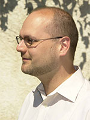

C. R. Ramakrishnan
Personal Page: http://www.cs.sunysb.edu/~cram/
E-mail: cram@cs.stonybrook.edu
Title of Talk: Probabilistic Tabled Logic Programming with Application to Model Checking
Abstract: There has been extensive work on using logical inference, especially tabled resolution, for program analysis and model checking. These works primarily cast the verification problems in terms of query evaluation over logic programs, and use the underlying inference procedures to derive efficient implementations directly from the logic programs.
Recent work has extended these results to probabilistic systems by leveraging work on probabilistic logic programming. In this talk we will review the work on combining logical and statistical inference in probabilistic logic programming.
We will cover approximate inference and parameter learning problems in this setting as well. We will then describe how a number of problems in probabilistic model checking and probabilistic program analysis can effectively implemented in terms of query evaluation.
Please click here to download the slides of his talk
Please click here for the video of this talk
Pascal Hitzler
Personal Page: http://www.pascal-hitzler.de/
E-mail: pascal.hitzler@wright.edu
Title of Talk: Recent advances concerning OWL and Rules
Abstract: The relationship between the Web Ontology Language OWL (based on description logics) and rule-based formalisms such as Datalog and RIF has been the subject of many discussions and research investigations, some of them controversial. From the many attempts to reconcile the two paradigms, we present some of the newest developments. More precisely, we show which kind of rules can be modeled in the current version of OWL, and we show how OWL can be extended to incorporate rules without compromising OWL design principles. We also include a discussion of the fundamental limitations concering the integration of OWL and Rules, and a report on ongoing work regarding algorithmizations of reasoning for our integrated paradigm.
Please click here to download the slides of his talk
Please click here for the video of this talk
 Torsten Schaub
Torsten Schaub
Personal Page: http://www.cs.uni-potsdam.de/~torsten/
E-mail: torsten@cs.uni-potsdam.de
Title of Talk: Experiencing Answer Set Programming at Work, Today and Tomorrow
Abstract: Answer Set Programming (ASP;~\cite{gellif88b,baral02a,gekakasc12a}) has become a popular and widely-used approach to declarative problem solving. This is mainly due to its appealing combination of a rich yet simple modeling language with high-performance Boolean constraint solving capacities.
Moreover, ASP features a whole spectrum of combinable reasoning modes going well beyond satisfiability testing, among them, different forms of model enumeration, intersection or union, as well as multi-criteria and -objective optimization. As a consequence, ASP faces a growing number of increasingly complex applications. A (biased) list if prestigious applications of ASP includes composition of Renaissance music~\cite{bobrvofi08a}, decision support systems for NASA shuttle controllers~\cite{nobagewaba01a}, Linux package configuration~\cite{gekasc11c}, reasoning tools in systems biology~\cite{erdtur08a,gescthve10a,geguivscsithve10a} and robotics~\cite{chjijijiwaxi10a,erhapapaur11a}, industrial team-building~\cite{griilelirisc10a},
and many more.
However, despite its increasing popularity, ASP cannot yet be regarded as an established IT technology, matching the needs for a widely used problem solving
paradigm.
Starting from an introduction to ASP's problem solving methodology, the talk will discuss challenges met in today's applications and hint to prospective solutions that
must yet be accomplished to make ASP a true success beyond the realm of academia.
Please click here to download the slides of his talk
Please click here for the video of this talk
 Hans van Ditmarsch
Hans van Ditmarsch
Personal Page: http://personal.us.es/hvd/
E-mail: hans.van-ditmarsch@loria.fr
Title of Talk: Dynamic Epistemic Logic and Lying
Abstract: Dynamic epistemic logics are logics to formalize knowledge and change of knowledge.
A well-known such logic is the so-called logic of public truthful announcements, proposed by Plaza in 1989. I will introduce some dynamic epistemic logics, by way of the following epistemic riddle (known since the 1950s, in Littlewood's writings).
Anne and Bill are each going to be told a natural number. Their numbers will be one apart. The numbers are now being whispered in their respective ears.
They are aware of this scenario. Suppose Anne is told 2 and Bill is told 3. The following truthful conversation between Anne and Bill now takes place:
- Anne: 'I do not know your number.'
- Bill: 'I do not know your number.'
- Anne: 'I know your number.'
- Bill: 'I know your number.'
Explain why is this possible.
In dynamic epistemic logics it is also possible to model lying, such as lying announcements in the above riddle. The second part of the presentation will focus on that.
Please click here to download the slides of his talk
Please click here for the video of this talk